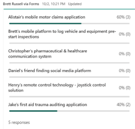
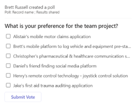
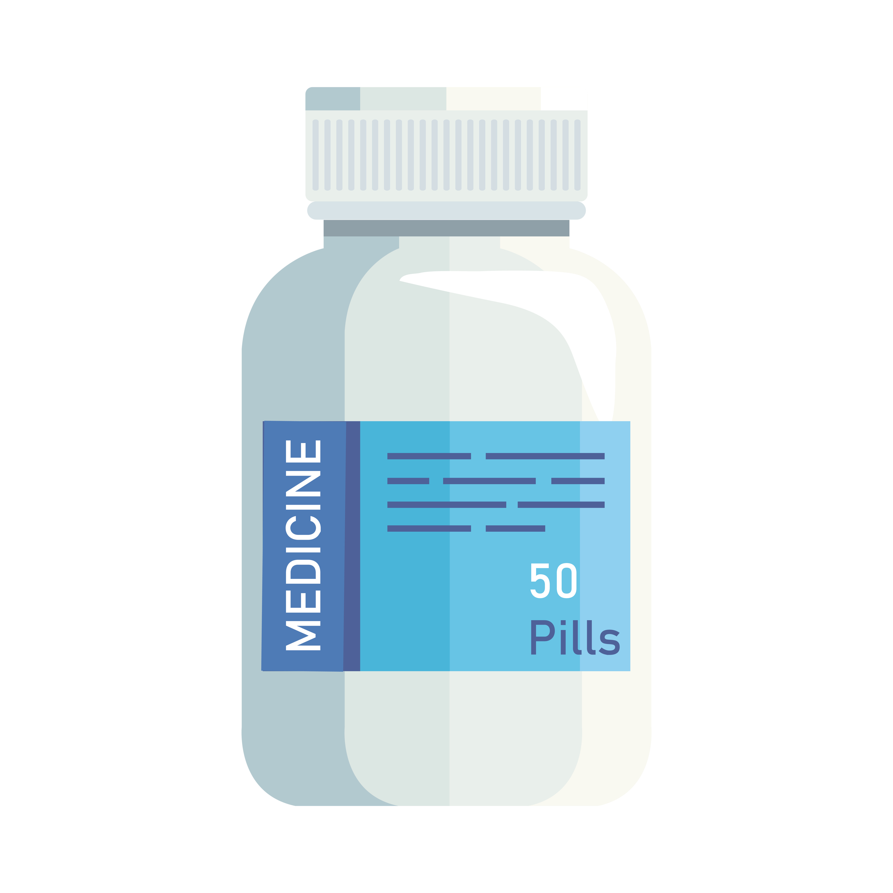

The IT Crowd
MedCONNECT Website: https://github.com/ali1mcleod/medCONNECT.github.io
MedCONNECT Repository: https://ali1mcleod.github.io/medCONNECT.github.io/
Given the group had agreed upon only Alistair to work on setting up the group repo and carrying out add on’s to our existing assignment from Assignment 2, I feel the work completed and outlined within the repo doesn’t give a great representation of how much work/effort other team members have put into other aspects of the project. The repo only shows the commits added by Alistair however these commits could be adding written work completed by another member of the group.
Alternatively the repo does give an insight into the groups progress and the finalisation of the assignment. Each commit includes updates or alterations to our body of work which directly correlates with changes being made by group members to the written A3 report.
We would like you to come and take a look at our MedCONNECT Prototype
Our main artifact for this assignment is our completed website prototype which provides a detailed insight into how our program would aesthetically look as well as showing off some of the features we have implemented. This artifact provides a first hand look into how both a doctor and pharmacist accessing the program would interact with it. We have included mock logins which can be used for both the doctor and pharmacist logins. When attempting to login please use the below logins:
Doctor Login: Doctor_Kelly (username) and 12345 (password)
Pharmacist Login: Pharmacist_Smith (username) and 12345 (password)
After working in the healthcare industry for 7 years, Chris saw that many times there was a serious breakdown in the communication between a patients doctor and pharmacist. Whilst one could easily assume that a prescription that is written by a doctor, is a prescription that can be filled by a pharmacist, the seriousness of not having all a patient's medical information is grossly underestimated by the general public. Unfortunately, in Australia we do not have a unified healthcare system that updates in real time to display each patient's current medication list, doses, strengths, allergies, med chart or any other important medical information.
MedCONNECT was an idea born from the frustration of trying to contact doctors at hospitals, general practices and vice versa. Patients who many times knew no better would suffer the consequences of their trusted medical professionals not being able to access all the information needed to autonomously prescribe and dispense the correct medication. Severe and sometimes fatal drug interactions occur at this blind intersection of our healthcare system.
Our program is an online communication program aimed at connecting doctors and pharmacists in real time. This program allows for a streamlined means of communication to allow for on the fly script amendments, queries, and alterations. This program resolves the ongoing issue of communication delay between both parties which can ultimately lead to a delay in a patient receiving their medication or even potentially patients receiving incorrect medication. Whilst Doctors correctly prescribe as they see fit, many times a medication is not suitable as the patient hasn’t alerted the doctor or is unable to inform the doctor of their current medication list, as is the case with older and disabled patients. Pharmacists in community settings need to have quick access to doctors to be able to provide the correct ethical treatment whilst doctors need to have quick access to pharmacies to amend or query where they see fit. Many Schedule 8 medications in Australia are critical for patients’ wellbeing and are by law not allowed to be dispensed unless the doctor has correctly written the script, many times doctors through human error do not correctly write these scripts ending in patient harm. We hope MedCONNECT will resolve these issues.
Our idea is to create an application network where health professionals and pharmacists can quickly and efficiently communicate with each other for patient-based specialised services and queries. It would focus predominantly on creating a direct line of communication between doctors (in both hospitals and private practices) and pharmacists (in both public and community settings). It would be available on desktop via a cloud service, this would be powered by cloud computing software, specifically Amazon Web Services (AWS). The program would also ideally be integrated with existing industry standard software used in the health space.
This project has come about from personal experience (Christopher McLeod) working in the healthcare space. Communication between pharmacists and doctors is practiced already in the industry as it’s such an important part of providing quality care to patients, but the methods used are time consuming and dated. Usually communication is via fax, phone, or email, with additional barriers at each step. A new state-wide system needs to be implemented to vastly improve the time taken out of healthcare workers days trying to communicate sometimes complex problems with one another before coming to a solution. “A review of medication safety from the National Prescribing Service show approximately 6% of hospital admissions are associated with adverse drug events and high error rates during transfer of care. Poor communication was the most important common factor contributing to medication errors. Increased interprofessional collaboration between doctors and pharmacists could therefore reduce the considerable medication-related morbidity and mortality" Easton K. (2009).
After speaking directly with both pharmacists and a local Doctor, Christopher McLeod found that both would appreciate and benefit from such a system. Put simply, the benefit of this application would be to have a secure and direct line of communication between doctors, pharmacists, and other healthcare professionals to avoid any errors. We hope this app will help with common errors that occur due to today's lack of professional communication. Common errors included: Duplication of therapy (either getting two of the same medication or two drugs in the same class). Omitted but necessary medications. Unreported use of herbals or dietary supplements TheConversation.com (2018). Common mistakes on prescriptions and issues with transferring of care can take up to 48 hours to resolve using today’s industry standard of communication between professionals.
This is an important application in the medical world and will help not just the doctors and pharmacists but ultimately the patients. It is important to patients by reducing incorrect treatment being given which may result in needing further medical care (attendance to hospital for example) but on a less severe point it will also save the patient time by ensuring the information given to the pharmacist is able to be questioned instantly rather than having to send the patient away to return to see their doctor. The application will fit within current IT trends, especially in the space of Cloud Computing and Mobile Apps, two of the highest trends in Information Technology. Equally important as the trends themselves is the need to keep information safe, something we have done with our App which includes end-to-end data encryption. Developing this app demonstrates our group’s ability to not only think strategically, looking to the future for better and more efficient ways of doing things, but also demonstrates the technical knowledge to be able to develop the application.
There are similar platforms that are approved by the Australian Government and are endorsed by The Pharmacy Guild of Australia, such as Prescription Exchange Services (PES) like eRx Script Exchange and MediSecure. (PGA, 2020:1) These two platforms are considered Electronic Transfer of Prescriptions (ETP) applications and allow patient prescriptions to be transferred from the prescribing service to the pharmacy in question. (PGA, 2020:1).
However, unlike our MedCONNECT platform, these services are used as sending these prescriptions securely only and do not take advantage of MedCONNECT’s primary focus of allowing communication between doctors and pharmacists to rectify any mistakes made and prevent financial and medical harm. (MediSecure, n.d) (eRx, n.d)
We believe that our product will therefore be the best platform within our medical field landscape as we allow communication between these parties on top of acting as a ETP platform. This will reduce the risk of miscommunication between both parties and any medical errors, which is further outlined below. However, it is essential that we act fast in our development and trademark our IP as having this communication feature to ensure we can remain viable within this landscape for many years to come.
Our group intends to make what is a certain life-saving idea into a sure-fire reality, which became even more prevalent when we found that this idea solved such a costly and serious problem within our society. To put this into perspective, medical errors in Australia alone result in there being $1.2B in estimated costs to the public health sector annually (ACSQHC, n.d).
Our project came together from a collaboration of problem-solving perspectives to determine how we can prevent medication errors because of poor communication between medical professionals, such as doctors and pharmacists, and how we could turn this idea into a reality.
Our aim is simply as follows:
To provide a reliable, professional, and robust communicative platform to all doctors and pharmacists to prevent unintentional harm to customers by way of medical error.
We know that ideas are only as good as the effort behind them in turning them into a reality. Our team has been working hard over the past few weeks developing a minimum viable product as a proof of concept of our MedCONNECT platform that best attempts to achieve our aim. To fulfil our aim, we have set a few goals. In order from top priority to lower priority, they are as follows:
1. (PRIMARY GOAL) DEVELOP AND TEST WORKING MEDCONNECT PROTOTYPE (MINIMUM VIABLE PRODUCT – MVP):
This has been our main goal in achieving our aim at this current point in time. We have been working and collaborating with each other to design a simple and effective product as a proof of concept. As Chris has been working within the industry and knows firsthand the amount of additional work miscommunication can bring between doctors and pharmacists, his prior knowledge has been paramount in instructing and assisting our group in knowing how to best approach and achieve our aim. The prototype of the MedCONNECT platform’s primary focus is to allow our doctors and pharmacists a platform to communicate, to have data stored securely via AWS IaaS (Infrastructure as a Service) and to have a simple UI (User Interface) and UX (User Experience).
MedCONNECT can be focussed to have more functions within scope down the track, such as allowing video/audio contact via a VOIP (Voice Over Internet Protocol) approach and a QR (Quick Response) code scan function for electronic script recognition. Once we are satisfied with our application, we need to get the prototype tested to ensure it meets our primary goal and satisfies our aim.
2. TRADEMARK THE MEDCONNECT PLATFORM:
Despite there being comparable products on the market in the medical landscape as mentioned above, such as Electronic Transfer of Prescriptions (ETP) platforms such as MediSecure and eRx, we are confident that via our implementation of our primary goal we will have a competitive design and future industry standard platform on our hands. As such, we will require undergoing legal procedures under Australian Copyright law of Trademarking our MedCONNECT platform to prevent any copyright or intellectual property loss. This will cost around $200 to complete a pre-application for a Trademark (IPAustralia, 2021). However, to prevent any loss of Intellectual Property, it may be worth consulting a solicitor with a solid baseline of knowledge on IP law to cover our bases.
3. AFFILIATE WITH PHARMACY GUILD OF AUSTRALIA (PGA):
The Pharmacy Guild of Australia is an Australian wide organisation that represents and promotes pharmacies around the nation (PGA, n.d). As such, they act on behalf of pharmacies around the country and work alongside the Australian Government. As a result, before anything relating to our pharmaceutical platform is released or before approaching any organisations, we should approach the PGA with our proof of concept and negotiate where we can implement a small test control group.
4. HAVE MEDCONNECT USED IN SMALL CONTROL GROUPS AND OBTAIN FEEDBACK:
Upon completion of our primary goal, and upon successfully protecting the next logical step will include having the prototype being used amongst several willing pharmacies and a singular hospitals. This will allow us to determine several aspects, such as confirming our budgeting costs for our platform’s IaaS and maintenance factors, whether the user experience is positive and how effective our platform is at achieving our aim. It is acceptable to allow anywhere from 2-4 weeks for this goal to be met as to ensure we analyse all data relevant to our platform and fix any bugs before expanding our reach.
5. EXPAND REACH OF MEDCONNECT:
Upon proving our proof of concept works and fixing any issues that our UI/UX may have, we will be ready to expand our reach of our platform. This can simply be achieved by matter of word-of-mouth, such as the positive reviews and reflections of our small control group and/or approaching other pharmacies and hospitals in the vicinity. With the help of the PGA, we will have better marketability with other hospitals and pharmacies around Australia, and before long, we will need to consider future scope and marketing in the pipeline. Do we want to become an industry standard and become subsidised under Medicare? Or do we want to run a subscription model? How many more employees do we need to employ? However, this goal can only be worked on upon the completion and realisation of the previous four goals.
The IT Crowd project began by the group completing a survey of the possible options from each member.
 The preferred project idea was initially selected as being Alistair’s mobile motor vehicle claims application. After further group discussion and elaborating on the projects a change was decided and we went with that of our resident “Chemist in the making”, Christopher McLeod’s idea of developing software that connects Chemists to Doctors.
Chris was experiencing first-hand the challenges and frustrations that occur daily in a Chemist when customers attend only to find that the script they have presented is incorrect in some way. From this Chris came up with the idea that customers and medical practitioners alike could benefit from a software or application that offers a form of professional connection platform which puts them in touch with one another in times of a customer delivering a script to a Chemist which is incomplete, or incorrect. It would focus predominantly on creating a direct line of communication between doctors (in both hospitals and private practices) and pharmacists (in both public and community settings). It would be available on desktop via a cloud service, this would be powered by cloud computing software. Common script errors included: Duplication of therapy (either getting two of the same medication or two drugs in the same class). Omitted but necessary medications. Unreported use of herbals or dietary supplements. Mistakes on prescriptions and issues with transferring of care can take up to 48 hours to resolve using today’s standard of communication between professionals.
As we began working in earnest on the project we first came up with a rough idea of what we thought would be required to get a mock project up and running, this included a high-level list of the tools and technologies required to build the application. Chis did some of his own research and came up with the below list of tools and technologies to further develop into our project:
Amazon SNS - Fast, flexible, fully managed push messaging service.
Amazon Cognito - Simple and Secure User Sign-Up, Sign-In, and Access Control.
Amazon Pinpoint - Targeted Push Notifications for Mobile Apps.
Amazon S3 - Secure, durable, and scalable object storage infrastructure.
Amazon CloudFront - Web service to distribute content to end users with low latency and high transfer speeds.
Amazon API Gateway - Publish, maintain, monitor, and secure APIs at any scale.
Amazon CloudFront - Web service to distribute content to end users with low latency and high transfer speeds.
Amazon SQS - Scalable queue for storing messages as they travel between computers.
AWS Amplify Hosting - Fully managed CI/CD and hosting service for fast, secure, and reliable static websites and server-side rendered web apps.
AWS ChatQL is a tool we would use to implement the ability to send chats.
As we began trying to research the above list it became clear that we would not have either the time or the required knowledge and skill set to fully develop the application using all of the above. It would require significant learning on majority of these listings to get a good enough understanding to be able to not just use them but use them well enough to demonstrate our project. We also explored the use of Microsoft SQL server to create a mock database however as a group decided that we would not require this level of detail for the initial presentation. In addition, we utilised the services of a work colleague to guide us on the practicality and time required to develop a form of web-based messaging service to actually show the interaction that would occur between a doctor and a chemist, however again it was decided that this would be above our capabilities at this stage.
Instead, what we did do, was first discuss with Pharmacists and Doctors what features would be essential to them in a program such as MedCONNECT. We found that the fundamentals we based our program on, such as simple, secure messaging with the ability to upload either a copy of a paper-based script or E-Script (also known as eRX, which comes in the form of a QR Code) would be the most helpful and make the most sense for them in their day-to-day workflow. I suggested the idea to a local Doctor in Leichhardt if an alert system for overdue messages or requests would be helpful. The feedback received was that this would also need to be an essential part of the system, as Doctors rely heavily on their staff to ensure they are attending all requests sent to them in a timely manner. With a program like MedCONNECT this feature would be baked into the system, and much like a doctor or Pharmacist logging into the software they use each day for their respective professions, MedCONNECT we envision would be much the same. An essential part of their workflow.
Moving forward with the feedback we decided to first create a detailed flowchart on paper, of how the website would run. From the landing page to login page to each respective tab. We discovered at this stage some tabs would be exclusive for each profession. For example, pharmacists wouldn’t need the ability to upload a script, but Doctors would. Doctors would need to know what scripts are owing, that are yet to be written for mutual patients, whilst Pharmacists would need the ability to see what scripts they’ve requested, but not yet received. This first draft of a flowchart allowed us to see if each step was quick, easy and made sense. We initially had a landing page with only 1 login portal, we quickly realised that in a real-world use case this wouldn’t work as Dr’s would be logging in most likely with a prescriber number, which identifies that individual. Whilst each Pharmacy location would have their own login, most likely an email, as the Pharmacist in charge in many places can change during the day/week. So, we decided to create a landing page where you selected if you’re logging in as a doctor or for your Pharmacy.
Deciding how to display this idea as a prototype was challenging. We knew with our limited knowledge and time constraints we could either produce a visual design of a website on a program such as Adobe InDesign/Photoshop to convey what each page would look like. Or we could use prototyping software to create an interactive website, with limited features but more accurately portrayed the UI and UX of what the end user would experience. We ultimately decided to create as best we could a prototype of the website with Proto.io. Proto.io is an application prototyping software, which allows the user to create a prototype of an application that is currently in development. Whilst we had no prior knowledge of using this program we researched and found it wouldn’t be too hard to learn the basics and some fundamental tools to create our vision.
After initially using the program, we found that the templates the software provided wouldn’t help us with creating our program. We researched different website landing pages to see what we could achieve, whilst also making sure it was simple as we were comparing it to software that Doctors, and Pharmacists already use today. The colour scheme we designed from scratch trying to stick to different hues of Blue all the way down to White. We designed the logo in Adobe Illustrator, which gave us the ability to scale our logo when needed without distortion or pixelation. We knew having a colour scheme that was based around one colour would give us the ability to provide standout alerts on contrasting colours such as Red or Purple.
Moving forward with the project, outside of the timeframe we have, there are a few key aspects we would recommend if this project was handed off to another team. Firstly, and most importantly would be the funding. This project, whilst it could be monetised, would be very hard to implement and fund without the support of the Australian State and Federal Government. Given the strict regulations surrounding any type of access to sensitive healthcare information in Australia, this project would need to be signed off by the powers that be. Whilst there are many private companies that work with sensitive health data of the Australian people, most do not have the access this program would require to fully function. This program is an idea that, at its core, would support healthcare workers to reduce the risk of patient illness during the continuity of care in our healthcare system.
Assuming this program was to be rolled out on a state-wide basis first, each state would need to complete a rigorous survey of healthcare professionals to see what features would be most important. After completing this and deciding the program is necessary, the project would then move onto building and testing. This would consist of designing and testing that would be completed before any users are onboarded. Multiple rounds of meticulous testing would be needed to ensure that the program functions as intended. Similar projects in the healthcare industry are then usually rolled out to small sample ‘units’ which is a collection of healthcare professionals where the users would most likely benefit. Only a small number of users would be onboarded at this stage, as the program is still undergoing testing and receiving feedback from its initial users at this stage.
After any issues raised or valid recommendations have been implemented the government would approve the proof of concept and the project would then be greenlit for a larger rollout. In many cases it would be by those who volunteer first, with a compulsory sign up date following. This is currently the industry standard for most healthcare programs that the Government mandates. During the development of this program, ensuring privacy of patients and their medical data is maintained is paramount. The program would need to have privacy and end-to-end encryption baked into the foundations, and every step afterwards.
Jake Bone – Content Creator
Christopher McLeod – Project & Technical Design
Alistair McLeod – Content Creator
Brett Russell – Research and Group Administration
Daniel Sodeman – Technical Analyst
In terms of development this is quite a large project to produce and implement. Due to the limited time frame our group – The IT Crowd have decided to focus on a reduced number of key elements. What is in scope: Software requirements specification, User task list, Developing the upfront web design demonstrating what the MedConnect App would look like.
Out of scope would include: Development of the interfaces required to connect and send live messages, User acceptance testing, Approvals from government medical agencies, Provision of real doctor / pharmacist or patient records, Client credit applications, Business financials (P&L, Balance Sheets, Bank Accounts)
One factor that severely limits scope is a budget, and time. The project idea has received positive feedback from actual Chemists working in the industry today. Whilst the project appears to have merit unfortunately being an assignment for university means there is no funding and not enough time to really see if this project could be implemented in the real world.
After revision and looking at options, we have decided on creating this app using Amazon Web Services (AWS). There are a few reasons for this, one is that we can utilise all the AWS options available to implement different features that we need, also there is not upfront cost, as Microsoft Azure and others are based on a pay-per-minute model. We will also have the availability to quickly scale this app when more users come on board. Usually when professionals sign up to certain services as a legal requirement of their license, large influxes can occur close to its due date. Along with the option to expand quickly when we need more storage, we also have the benefit of not having to build and pay for servers that we will not be using during the start. There are multiple government programs that run on AWS as the security has been approved by the Australian Cyber Security Centre. As reported by ZDNet, Thursday's deal follows AWS in January receiving certification from the Australian Cyber Security Centre (ACSC), allowing the cloud behemoth to provide storage for highly sensitive government workloads out of its AWS Asia Pacific (Sydney) Region. ZDNet 2019
Most of this program will be built from the ground up on Amazon Web Services IaaS toolset, this will allow cost reductions through efficiencies of scale. If we are successful in building and deploying this service with the help of the State Government, I believe the New South Wales (NSW) State Healthcare Industry would set a new standard for how healthcare professionals provide critical care to patients in Australia. The doctors and pharmacists would have a clear real time channel of communication with each other resulting in better outcomes for patients and avoiding any errors that occur due to breakdown in lines of communication.
The following list shows the AWS tools we would need to use to create this app:
Amazon SNS - Fast, flexible, fully managed push messaging service.
Amazon Cognito - Simple and Secure User Sign-Up, Sign-In, and Access Control.
Amazon Pinpoint - Targeted Push Notifications for Mobile Apps.
Amazon S3 - Secure, durable, and scalable object storage infrastructure.
Amazon API Gateway - Publish, maintain, monitor, and secure APIs at any scale.
Amazon CloudFront - Web service to distribute content to end users with low latency and high transfer speeds.
Amazon SQS - Scalable queue for storing messages as they travel between computers.
AWS Amplify Hosting - Fully managed CI/CD and hosting service for fast, secure, and reliable static websites and server-side rendered web apps.
AWS ChatQL is a tool we would use to implement the ability to send chats.
Based off the AWS Pricing Calculator the running costs at the start and prior to scaling will cost roughly $23,800. We would also in the future work on integrating this program with the government’s web-based program that handles QR Code scripts. This program is called MedView (known by professionals as Flow). Flow is a web application only; it handles the Electronic Scripts (also known as eRx) which is quickly becoming the industry standard. You can add to the queue of scripts in this application via either third-party apps (patients use) or by scanning the QR Code in using hardware in a pharmacy. Flow does not currently support any option for a doctor to send a script directly to a pharmacies queue. By only integrating our application with Flow it means we are not only giving Doctors the option to add a prescription to a pharmacies queue, but it also means we would not need to integrate it with any dispensing software which would be hard as there is a few different versions. This will save on costs as well as simplifies the workflow of our app.
End-to-end encryption is vital to maintaining patient trust whilst also adhering to Government standards. We hope to achieve this by configuring encryption ie SSL termination at ALB and also self-signed certs in web servers Aravind G V (2018)
To achieve our collective aim, which outlines that we desire a robust and reliable platform for all doctors and pharmacists to use, we will require regular quality assurance testing. To begin our testing, it is financially viable to have a staff member complete the initial testing process, such as determining whether there are any coding errors or bugs within our platform and testing the response time and scope of the project.
For our prototype, our group has been fortunate to have a colleague know a Quality Assurance (QA) tester to assess our platform as we currently have it. The platform was provided to Mr Francis Qa’Ux of Testing Australia by Chris to provide some initial feedback.
The test took around 6 hours to complete, which included Mr Qa’Ux creating a testing plan and testing the functionality of two mock employees on the platform and testing the data’s security and function prior to authoring a report (devm.io, 2016). As Mr Qa’Ux has been in the industry for around 5 years, he is well versed in his knowledge of QA and quoted his rate as being $410 for the job.
As far as the feedback report we received goes, we realised that whilst the platform has been initially designed well and has some fantastic simplistic user experience capacity, there are some minor areas of improvement for us. For example, it was outlined that we can consider adding in some colour coding within messages to assist in distinguishing which pharmacy each message has come from via a “favourites” system to assist doctors and adding in a distinguishable alerts function. It was also discussed about adding a more effective Log Out system and some minor tweaks with some graphical errors within “Search” tab on the navigation bar. This report was relayed onto the rest of our group, and Chris noted the recommendations as listed above and advised that he will be adjusting the interface of the platform as a result. This is exactly what we want to see when it comes to future testing and UI/UX development.
Once we have completed our first few steps of our goal, such as completing a prototype and having a small control group test the platform’s effectiveness, we can receive valuable feedback as to our user design and expand our scope to include matters as discussed above, such as developing an efficient audio/video message function and receive recognition from government medical agencies.
Following this, our testing can either continue to be tested by our out-of-house QA tester Mr Qa’Ux or we can expand and outsource more QA testers the larger our scope becomes.
Insert Text here
No market research – what do the end users want (It may not be MedConnect). No defined strategic vision – what is most important (time, cost, or quality). No immediate understanding of what is actually required to develop the application. No prior knowledge of the software required or how to build the links & interfaces required. No real understanding of data encryption – highly confidential material, security is essential. No real understanding of the costs involved – difficult to establish a true ROI. No upfront budget. Relying on many assumptions. Ineffective team management. Last minute changes.
Our group (The IT Crowd) worked together on a previous assignment and chose to continue with the same structure for this assignment (other than losing one member of the group). Our main form of communication is via Microsoft Teams (group chat, file sharing and live group meetings). We generally meet at least twice per week on a Monday evening and Thursday evening. Members of the group are based on the eastern seaboard of Australia with one member (Brett Russell) based in the West, this is sometimes challenging due to the 3 hours’ time difference between the states. In general, the group has been able to coordinate time slots to suit all members, however work commitments sometimes created challenges. Communication levels are high between the group however, so any absent members are always able to easily understand what has been missed and any actions that may be required.
Text Here
JAKE BONE’s REFLECTION:
With a great portion of the project focussing primarily on the project idea in its entirety, we struggled to know who should be doing what part and how. I feel like if we all decided this earlier, it would have reduced some of our early concerns of this assignment. However, since our group works well together, we all came together and decided we each would utilise our strengths as our way of equally contributing within this assignment. I really feel like that our twice-weekly meetings worked well in quelling any issue that might be raised and that we all knew what we were doing and what we each were contributing to this assignment.
I was overall surprised as to how much of a “business” assignment this became and how we needed to utilise our overall academic skills to tackle this project. I learnt that groups work best when clear goals and achievements are set out, and that if someone knows what the goal is, then regardless of what the task is, teammates are typically happy. I found then if that teammate is struggling, others can step in and assist them as they also know what is expected of them. Personally, our group utilised Microsoft Teams as a major communication tool and most aspects of this project (barring the website) were contributed there. Personally, I felt that this worked well for us.
ALISTAIR MCLEOD’s REFLECTION:
I found this assignment really pushed our team to start making clear decisions on what roles each member would take in order to start progressing on the project. At the beginning I think the team may have been a bit standoffish when it came to assigning roles or even members putting their hand up to take on work. Over the course of the project and with our regular meetings I felt the group really found that sweet spot in communicating and identifying what each member is good at/would prefer to work on which really opened things up for us as a team.
I found the assignment made me think a lot broader in regards to the project. I was very focussed on the IT aspects of trying to develop our idea without really thinking about how the project would be funded, how would we make revenue ect. Overall I think my greatest takeaway from working on this project with my fellow group members is when the communication is open how much easier it is to come together for the common course I felt lucky with the team I am in because the communication was great and really helped create a positive collaborative environment.
CHRISTOPER MCLEOD’s REFLECTION:
After reflecting on this assignment, I found that a lot of our initial issues were resolved with clear communication. After a slow start to A2 we found that making clearly defined roles for each other, that also played of the strengths of that team member was the best way to move forward. We had some hurdles when it came to this A3 and A5 as far as mixed ideas of how we should approach some areas but quickly resolved them after 1 or 2 meetings. Most team member were prompt to put their hand up for a task and if one team member had a lot to work with there was always another who could come in and work to help the group achieve all tasks.
A few topics caught me personally off guard. Given the idea we chose to move forward with was my original A1 idea, I had a clear vision of what the program would look like but after receiving feedback from A2 realised there were holes missing as far as funding and technical aspects were concerned. My overall take away from this project and team is clear communication is key.
BRETT RUSSELL’s REFLECTION:
Like Jake, Alistair and Chris I believe the team has worked very well together in assignment 3 and 5, our team meetings which occurred twice per week were always filled with a few laughs as the group connected really well however we also developed a pretty consistent outcome of volunteering or assigning tasks. I learnt that communication is the key to success when working in groups, and calling any issues out early is the best way to avoid delays or frustrations. The group will no doubt benefit from the proactive attitudes of Chris, Jake and Alistair who not only were willing to jump into more of the technical side of things in the project but do it at a level that far exceeded my predictions of what the team would produce.
Chris has in my opinion warranted an extra mention as it was his project idea that the group chose back in assignment 1 and as a result a lot of the questions fell on him, so not only was he proactive in working on the technical side of things but he was also more than willing to provide guidance to the rest of the group on how the project would come to life and what would be required to do so.
My self-reflection was that I was open in communicating my limited amount of technical IT skills, and raised this as a question to the group at the beginning of the assignment that I would endeavour to make up for this in building the foundations of the Word document, and put a fair amount of time into putting the groundwork into the document to hopefully take some of the pressure off the guys that were working heavily on the technical aspects. It was discussed early in the assignment that we would focus on the groups strengths in the interest of achieving the best outcome for the assignment and I believe this aligned with the work that I did. I think this is the right approach and one that is also applicable in the workplace when working in teams / on projects etc. Our approach to the assignment of focusing on each members strength should be considered when reviewing the GITHUB log as not everyone’s assigned tasks involved them being involved with the GITHUB activities.
Overall, as this is the last unit of my degree I am extremely grateful to have joined a team that were willing and able to work well together and delivery quality work and thank them for having me on the team.